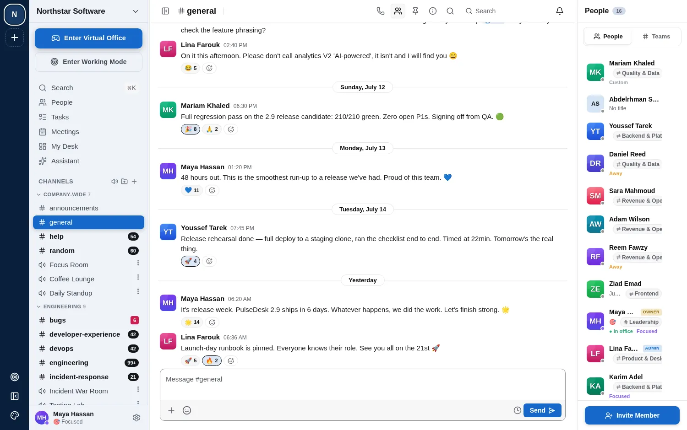

One workspace.
Not five disconnected tools.
Chat, tasks, meetings, a real-time 2D office and an AI assistant that actually knows your workspace — in one place, on web and mobile. No app-switching, no "who's even online right now."

Everything a remote team actually needs
Not five features bolted together — one workflow. A message becomes a task, a task has a deadline, a deadline is a meeting, and the same people are in all three.
Chat, threads & channels
Channels, threads and DMs — organised into categories your team actually defines, not a flat list.
A real 2D office
See who's at their desk, walk up, and talk — proximity voice, not a calendar invite for a 30-second question.
Tasks that sync with your calendar
Human task numbers, day-banded boards, and a scheduler that quietly sets your status to "In a meeting" for you.
An assistant that isn't a toy
"Catch me up on #general" gets you a real answer from your actual unread messages — not a hallucination.
End-to-end encrypted DMs
Direct messages are encrypted in the browser. The server stores ciphertext — even we can't read them.
A real mobile app
Channels, DMs, rooms and your workspace — Flutter, talking to the exact same APIs as the browser.
Built on a real microservices backend
Not a monolith with a nice UI in front. Independently deployable services, a real message broker, and dashboards that catch the bugs before your users do.
See it running
A two-minute walkthrough: log in, chat, get caught up by the assistant, create a task, walk into the 2D office.
The walkthrough couldn't load. Explore the live product at my-virtual-office.github.io.
Fifteen people, six teams, three months of history —
seeded and ready to explore.
Every screenshot on this site is the real product, not a mockup.
Walk through every feature →